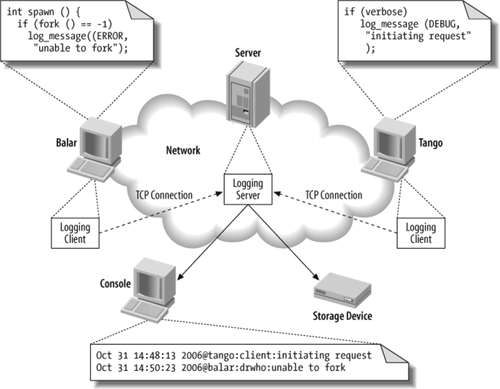
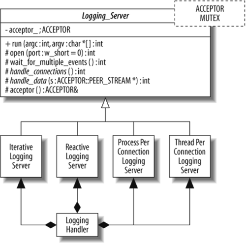

26. Labor-Saving Architecture: An Object-Oriented Framework for Networked Software
William R. Otte and Douglas C. Schmidt
Developing software for networked applications is hard, and developing reusable software for networked applications is even harder. First, there are the complexities inherent to distributed systems, such as optimally mapping application services onto hardware nodes, synchronizing service initialization, and ensuring availability while masking partial failures. These complexities can stymie even experienced software developers because they arise from fundamental challenges in the domain of network programming.
Unfortunately, developers must also master accidental complexities, such as low-level and nonportable programming interfaces and the use of function-oriented design techniques that require tedious and error-prone revisions as requirements and/or platforms evolve. These complexities arise largely from limitations with the software tools and techniques applied historically by developers of networked software.
Despite the use of object-oriented technologies in many domains, such as graphical user interfaces and productivity tools, much networked software still uses C-level operating system (OS) application programmatic interfaces (APIs), such as the Unix socket API or the Windows threading API. Many accidental complexities of networked programming stem from the use of these C-level OS APIs, which are not type-safe, often not reentrant, and not portable across OS platforms. The C APIs were also designed before the wide-spread adoption of modern design methods and technologies, so they encourage developers to decompose their problems functionally in terms of processing steps in a top-down design, instead of using OO design and programming techniques. Experience over the past several decades has shown that functional decomposition of nontrivial software complicates maintenance and evolution because functional requirements are rarely stable design centers. [*]
[*] Object-Oriented Software Construction, Second Edition, Bertrand Meyer, Prentice Hall, 1997.
Fortunately, two decades of advances in design/implementation techniques and programming languages have made it much easier to write and reuse networked software. In particular, object-oriented (OO) programming languages (such as C++, Java, and C#) combined with patterns (such as Wrapper Facades, [ ]Adapters, and the Template Method [
]Adapters, and the Template Method [ ]), and frameworks (such as host infrastructure middleware like ACE[§] and the Java class libraries for network programming, [||]and similar host infrastructure middleware) help to encapsulate low-level functional OS APIs and mask syntactic and semantic differences between platforms. As a result, developers can focus on application-specific behavior and properties in their software, rather than repeatedly wrestling with the accidental complexities of programming the low-level networking and OS infrastructure.
]), and frameworks (such as host infrastructure middleware like ACE[§] and the Java class libraries for network programming, [||]and similar host infrastructure middleware) help to encapsulate low-level functional OS APIs and mask syntactic and semantic differences between platforms. As a result, developers can focus on application-specific behavior and properties in their software, rather than repeatedly wrestling with the accidental complexities of programming the low-level networking and OS infrastructure.
[
[
[§] C++ Network Programming, Vol. 2: Systematic Reuse with ACE and Frameworks, Douglas C. Schmidt and Stephen D. Huston, Addison-Wesley Longman, 2003.
[||] Java Network Programming, Third Edition, Elliotte Rusty Harold, O'Reilly, 2004.
A key benefit of applying patterns and frameworks to networked software is that they can help developers craft reusable architectures that (1) capture the common structure and behavior in a particular domain, and (2) make it easy to change or replace various algorithms, policies, and mechanisms selectively without affecting other existing parts of the architecture. While most developers of networked software can apply well-designed OO frameworks to their applications, the knowledge of how to create such a framework remains a black art that has historically been learned only by extensive (and expensive) trial and error.
In addition to the conventional challenges of devising a flexible OO design that can expand and contract to meet new requirements, networked software must often run efficiently and scalably in a range of operating environments. The goal of this chapter is to help demystify the black art of OO frameworks for networked software by using a case study to systematically dissect the design and implementation of a representative networked software application.
In general, the beauty of our solution stems from its use of patterns and OO techniques to balance key domain forces, such as reusability, extensibility, and performance. In particular, our approach enables developers to identify common design/programming artifacts, thereby enhancing reuse. It also provide a means to encapsulate variabilities in a common and parameterizable way, thereby enhancing extensibility and portability.
26.1. Sample Application: Logging Service
The OO software that we use as the basis of our case study is a networked logging service. As shown in Figure 26-1, this service consists of client applications that generate log records and send them to a central logging server that receives and stores the log records for later inspection and processing.
Figure 26-1. Architecture of a networked logging service
The logging server portion (at the center of Figure 26-1) of our networked logging service provides an ideal context for demonstrating the beauty of OO networked software because it exhibits the following dimensions of design-time variability that developers can choose from when implementing such a server:
-
Different interprocess communication (IPC) mechanisms (such as sockets, SSL, shared memory, TLI, named pipes, etc.) that developers can use to send and receive log records.
-
Different concurrency models (such as iterative, reactive, thread-per-connection, process-per-connection, various types of thread pools, etc.) that developers can use to process log records.
-
Different locking strategies (such as thread-level or process-level recursive mutex, nonrecursive mutex, readers/writer lock, null mutex, etc.) that developers can use to serialize access to resources, such as a count of the number of requests, shared by multiple threads.
-
Different log record formats that can be transmitted from client to server. Once received by the server, the log records can be handled in different ways—e.g., printed to console, stored to a single file, or even one file per client to maximize parallel writes to disk.
It is relatively straightforward to implement any one of these combinations, such as running one thread per connection-logging server using socket-based IPC and a thread-level nonrecursive mutex. A one-size-fits-all solution, however, is inadequate to meet the needs of all logging services because different customer requirements and different operating environments can have significantly different impacts on time/space trade-offs, cost, and schedule. A key challenge is therefore to design a configurable logging server that is easily extensible to meet new needs with a minimum of effort.
At the heart of the solution to this challenge is a thorough understanding of the patterns and associated design techniques needed to develop OO frameworks that efficiently:
-
Capture common structure and behavior in base classes and generic classes
-
Enable selective customization of behavior via subclasses and by providing concrete parameters to generic classes
Figure 26-2 illustrates the design of an OO logging server framework that realizes these goals. The core of this design is the Logging_Server class, which defines the common structure and functionality for the logging server via the use of:
-
C++ parameterized types, which allow developers to defer the selection of data types used in generic classes or functions until their point of instantiation
-
The Template Method pattern, which defines the skeleton of an algorithm, delegating individual steps to methods that may be overridden by subclasses
-
The Wrapper Facade pattern, which encapsulates non-object-oriented APIs and data within type-safe object-oriented classes
Subclasses and concrete instantiations of Logging_Server refine this common reusable architecture to customize variable steps in the logging server behavior by selecting desired IPC mechanisms, concurrency models, and locking strategies. The Logging_Server is thus a product-line architecture [#]that defines an integrated set of classes that collaborate to define a reusable design for a family of related logging servers.
[#] Software Product Lines: Practices and Patterns, Paul Clements and Linda Northrop, Addison-Wesley, 2001.
Figure 26-2. Object-oriented design for the logging server framework
The remainder of this chapter is organized as follows. The next section describes the OO design of the logging server framework, exploring its architecture and the forces that influence the design of the OO framework to illustrate why we selected certain patterns and language features, as well as summarizing alternative approaches that we rejected for various reasons. Two further sections present several C++ sequential programming instantiations of the logging server framework and of concurrent programming instantiations of this framework. We conclude by summarizing the beauty of the OO software concepts and techniques in this chapter.